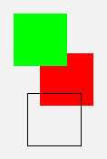

GeomLab comes with a number of pre-defined tiles that can be put
together into pictures. But there is also a way to make your own
tiles, using a 'secret' built-in function called _tile.
The underscore character at the start of the name _tile
has no special meaning: it's just there to make it less likely that
the name will clash with a name that you choose for an object or
function in your own program.
The function takes 6 arguments, and a typical call looks like
this:
_tile(w, h, x0, y0, outlines, fills)The function creates a rectangular tile that is w
units wide and h units high, and contains a number of
outlines drawn in
black, and behind them a number of regions filled with colours. Both
the outlines and the fills are described using Cartesian coordinates
relative to an origin that is x0 units to the right of and
y0 units above the bottom left corner of the tile.
The argument outlines is a list of outlines,
and each of these is represented as a list of numbers. The numbers
are taken in pairs as the coordinates of points on the outline. Thus
each outline is a list of even length.
The argument fills is a list of fills, each a list of odd
length. The first element of each list is a colour, created using one
of the primitives rgb or hsv that are
described in the library documentation.
The remainder of the list contains numbers that are taken two at a time
as the coordinates of successive points on the boundary of the filled
region. If the last point is different from the first, then the
boundary is implicitly closed with a final line segment back to the
start. As a special feature, the initial colour in a fill description
may be replaced by an integer between 0 and 3. This integer is then
taken as an index into a fixed array of four colours, and the
rot primitive is implemented in such a way that these
colours rotate as the picture rotates. This feature is used in the
Escher picture on Worksheet 6.
Here is an example, a tile that has one outline and two fills:
_tile(8, 12, 1, 1, [[1,0, 5,0, 5,4, 1,4, 1,0]], |
 |
The proportions of this tile are 8 units wide by 12 high, though as
always its actual dimensions are scaled to fit the window it is drawn
in. The coordinates for the shapes that appear on the tile are all
relative to an origin that is itself displaced by the vector (1, 1)
from the bottom left corner of the tile: so the left side of the green
square, although it has an x coordinate of 0, is not in
fact at the edge of the tile. This displaced origin helps with
adjusting the design of tiles, because we can easily change the empty
border that appears around the edge by changing the dimensions and
origin, without having to modify the shapes.
As you can see, the three shapes in this tile are all squares. The
pure red square (with colour rgb(1,0,0)) is drawn first,
then the
pure green square (colour rgb(0,1,0)), and finally the
square outline, so that the red square appears to be behind the
others. Fills are drawn in the order the appear in the list, followed
by outlines.
The simplest tiles consist of a single, filled stick-figure, and for these
a function _stick(w, h, x0, y0, colour, outline) is provided.
For example, the standard tile man is defined by
define man = _stick(12, 22, -1, -1, rgb(0.85, 0.85, 1.0),
[4,2, 6,2, 7,6, 8,2, 10,2, 8,10, 8,12, 12,12, 12,16,
10,16, 10,14, 8,14, 8,16, 10,18, 10,20, 8,22, 6,22,
4,20, 4,18, 6,16, 6,14, 2,14, 2,12, 6,12, 6,10, 4,2]);
Actually, the function _stick is not a primitive, but
is itself defined in the GeomLab language as follows:
define _stick(w, h, x, y, col, outline) =
_tile(w, h, x, y, [outline], [col:outline]);
These and other definitions can be found in the file
prelude.txt that is part of
the source code for GeomLab itself.